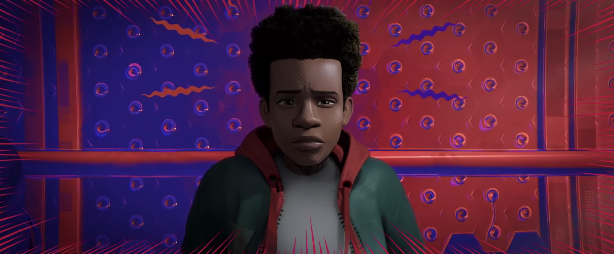

Spider-Man: Into the Spider-Verse is a 2018 American computer-animated superhero film featuring the Marvel Comics character Miles Morales, produced by Columbia Pictures and Sony Pictures Animation in association with Marvel. It is the first animated film in the Spider-Man franchise. Directed by Bob Persichetti, Peter Ramsey, and Rodney Rothman (in Persichetti and Rothman’s feature directorial debuts) from a screenplay by Phil Lord and Rothman, it stars Shameik Moore as Miles Morales / Spider-Man, alongside the voices of Jake Johnson, Hailee Steinfeld, Mahershala Ali, Brian Tyree Henry, Lily Tomlin, Luna Lauren Velez, John Mulaney, Kimiko Glenn, Nicolas Cage, and Liev Schreiber. Set in a shared multiverse called the “Spider-Verse”, the film’s story follows Miles Morales of Earth-1610 as he becomes the new Spider-Man and joins other Spider-People from various dimensions to save New York City from the Kingpin.
